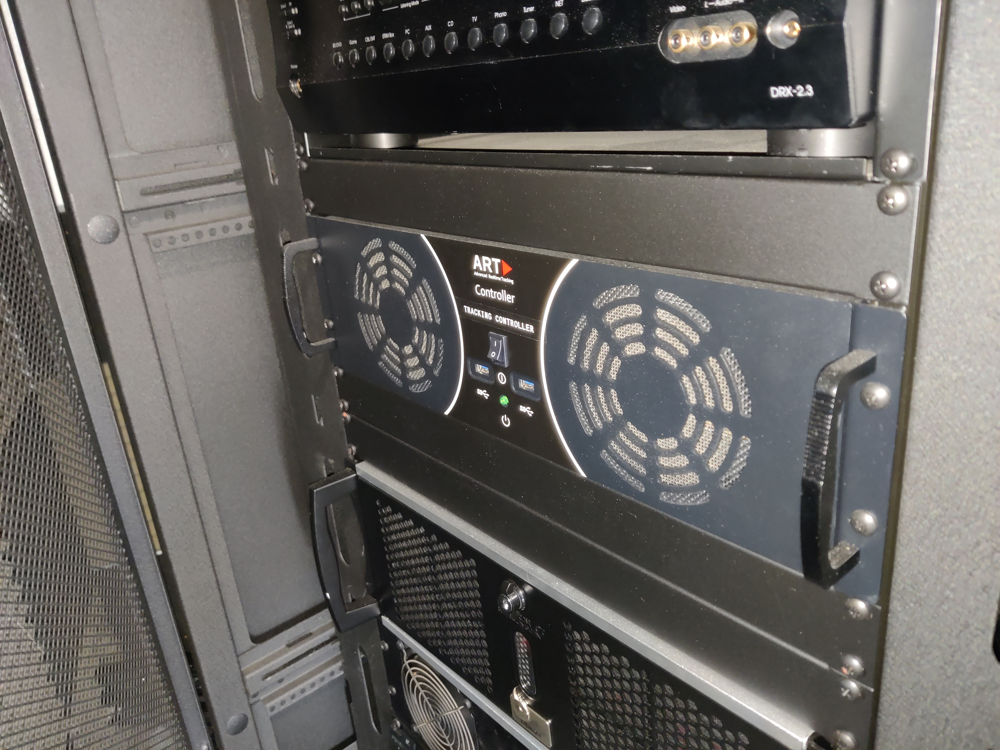
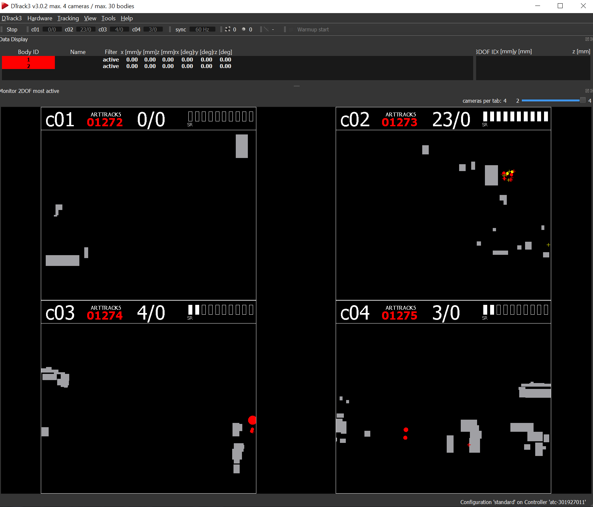
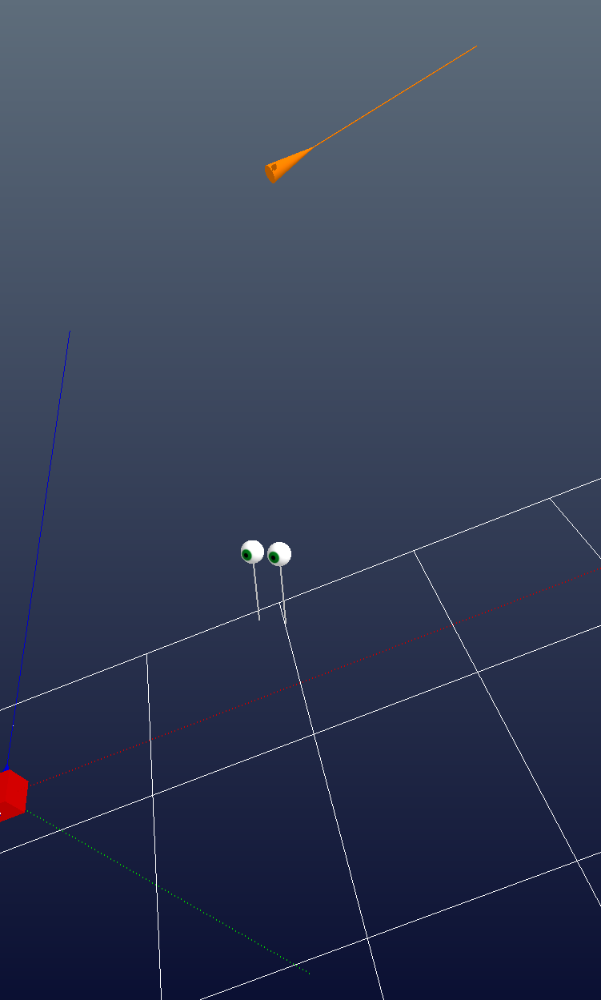

Tracking issues
I can’t connect to the ART tracking web server!
When the system cannot connect to the tracking, the ‘Connect’ buttop in DTrack3 will be greyed out as shown below. If you’re experiencing this, the best course of action is to reboot the ART tracking controller on the server rack. To do this, head over to the VizLab computing closet, find the tracking controller pictured below, and flip the power switch to off and back to on again.
{kind=link}
{kind=link}
The tracking is slow to recognize trackables (or it isn’t recognizing the trackables at all)!
The DTrack3 software is quite helpful here. To start, make sure the tracking is recognizing both trackables in the space. On the top left you should see two different bodies: the first is the glasses, the second is the controller. When each body isn’t found in the space, their ID’s are red, but when it’s properly tracking you’ll see green instead along with the 6 degrees of freedom tracking info.
{kind=link}
{kind=link}
If the tracking is still an issue, it’s likely that one of the four mounted trackers was bumped. To fix this, you’ll need to do a room recalibration so the trackers have an agreed-upon sense of scale.
To do this, start by retrieving the ART pelican case in the VizLab closet.
The case contains an angle piece and a wand, each with reflective tracker markers. The angle piece sets the origin for the tracked room. You’ll need to place it at a specific position and angle along the floor. Look for dots marked into the floor to help your alignment here!


Once the angle piece is set, you’ll want to screw the wand together. This wand has two tracker balls at a fixed distance apart.

Once you’re set with the two pieces, start the room calibration by going to Tracking -> Room calibration in DTrack3. You’ll want to make sure the camera’s view of the angle piece is unobstructed by any incident reflections in the environment. You can manually hide regions, but putting a rug underneath the angle piece has led to good results for me. From there, hit ‘Start’ and get ready to spin the wand around. The software is assembling a point cloud that lets it understand the room and what the tracker cameras are looking at.
In extreme situations, you can consider recalibrating one or both trackables to get better performance. To start, get to the Body Calibration menu within DTrack3. You can switch between different bodies; standard body 01 is the glasses, standard body 02 is the controller.
{kind=link}
Start by saving a backup of the current calibration file for each body that you’ll be recalibrating; we’ll need to compare the new file against the old one later on in the process. Once you’ve done that, you’ll need to have the body you’d like to recalibrate within the tracking space, then press Calibrate to start generating a new set of tracking positions. This may be a tedious process because of incident reflections in the space. On each camera view you have numbers on the top: the left one is any recorded reflections, the right one is reflections that DTrack3 is confident belong to a tracking ball. You want to minimize the number of incident reflections and maximize DTrack3’s confidence it’s finding tracking balls to get the best result!
{kind=link}
Once you’ve got a new tracking configuration, you now need to match the coordinate system in the new configuration to that of the old configuration. This is done through the Body Adjustment panel in DTrack3 by tweaking the body position and the body orientation.
{kind=link}
The best way to get the two to agree is by switching between the old and the new config and using the getReal3D for Unity launcher to see how well they agree. To set that up, head over to the getReal3D for Unity launcher and look at the current screen configuration (look at the HALFPIPE page and press the notepad at the bottom left). From there, navigate to the Tracking panel. Here you can see real-time visualizations of both the glasses and the controller in space.
{kind=link}
{kind=link}
I need to replace my trackables!
If you’re looking to make new tracking frames for the glasses or controller, you can find relevant CAD files and design docs here. These were put together by Julian Garcia here at Carnegie, so thank him if you can!
If you need to replace the metallic tracking balls, you’re looking for the 3/4” M4 markers found on Optitrack’s website.